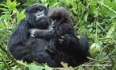
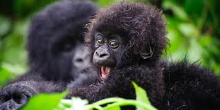
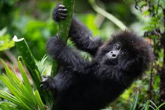
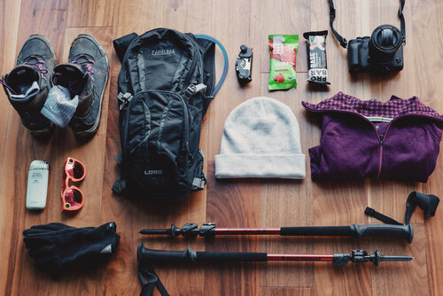
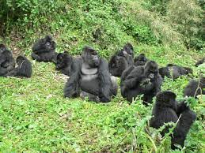
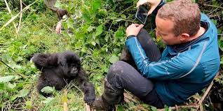

Overview
Purpose
Kwita Izina 2023 Event Site is designed to give all information about the 19th Kwita Izina will be held on Friday,
1 September 2023.
To help visitors experience one of the world's most important
celebrations of nature and meet Rwanda's newborn baby gorillas.
Audience
Local and International Visitors, Conservation Enthusiasts, and Tourists and Travelers.
Branding
Website Logo

Style Guide
Color Palette
Palette URL: https://coolors.co/palette/5bba6f-3fa34d-2a9134-137547-054a29| Primary | Secondary | Accent 1 | Accent 2 |
|---|---|---|---|
| [#5bba6f] | [#3fa34d] | [#2a9134] | [#137547] | [#054a29]
Typography
Heading Font: RockSalt
Paragraph Font: Roboto
Honoring Rwanda's Mountain Gorillas
Welcome to Kwita Izina, the annual event that celebrates the conservation efforts protecting Rwanda's iconic mountain gorillas. Join us as we honor these magnificent creatures and the dedicated individuals safeguarding their future. Discover the magic of mountain gorillas, learn about the significance of Kwita Izina, and find out how you can get involved. Whether you're attending in person or virtually, immerse yourself in an experience that highlights gorilla conservation and the bond between humans and nature. Stay updated with the latest news, explore our gallery, plan your visit, and get involved in the conservation efforts. Together, let's celebrate Kwita Izina, making a positive impact on the future of gorilla conservation.
Rwanda's Gorilla Naming Ceremony
Get ready to experience one of the world's most important celebrations of nature and meet Rwanda's newborn baby gorillas. The Kwita Izina gorilla naming ceremony is modelled off a centuries-old tradition in which Rwandans name their children in the presence of family and friends. For three decades before the first official gorilla naming ceremony, park rangers and researchers named Rwanda's mountain gorilla babies to monitor each gorilla in their family and habitat. In 2005, Rwanda began officially naming mountain gorillas in what has become a global celebration of nature. By giving a name to these majestic animals, they are given the value they undoubtedly deserve. The 19th Kwita Izina will be held on Friday, 1 September 2023, and will celebrate the country's commitment to sustainable and responsible tourism. The ceremony is, first and foremost, an opportunity to thank the communities that live around the gorilla habitat, Volcanoes National Park, research partners, vets and the dedicated conservationists, rangers and trackers who protect the gorillas daily. Over the last fifteen years, more than 350 mountain gorillas have been named. Today, Kwita Izina forms part of an ambitious strategy to preserve Rwanda's natural heritage and further expand the role of tourism in the country's transformation. As a result of the naming ceremony, Rwandans from all walks of life understand the intrinsic value of gorillas and their contribution to the country's economic prosperity. Rwandans have become gorilla guardians. Overall, Rwanda has emerged as a conservation and sustainable tourism leader on the continent. For instance, while in the 2010 Census, there were 480 mountain gorillas, the 2016 Census report indicated 604 individuals in the Virunga Massif. These efforts have contributed to the increase in mountain gorillas worldwide (1,063) and are categorised as no longer critically endangered. Learn more about Kwita Izina at www.kwitaizina.rw.
What to Wear
Dress codes are informal yet respectful. Men tend to wear trousers but shorts are fine, although walking around without a shirt is frowned upon. Women will feel more comfortable in knee-length or longer. Daytime temperatures are generally warm, so bring lots of light clothing and think about sun protection, including a hat and sunglasses. The evenings tend to be cool, and a light sweater appreciated. In Volcanoes National Park and Nyungwe National Park slightly heavier clothing is useful. A lightweight waterproof jacket may come in handy in the moist mountains. Avoid wearing blue in Akagera National Park, which attracts tse tse flies, and take sensible precautions against mosquitos and other bites. When tracking gorillas, wear sturdier clothing to protect against stinging nettles, and solid walking shoes. Consider bringing gardening or leather gloves as well as gaiters. For those who wear contact lenses, cleaning fluid is not readily available and dust or sun could prove an irritation, so it's best to bring a pair of glasses along for peace of mind.
Gorilla Tracking
There are twelve gorilla families living in the Volcanoes National Park, which are fully habituated, with a few others habituated solely for scientific research. The groups, or troops, consist of at least one silverback along with several females and youngsters. The troops are somewhat fluid in composition, but tend to stick to a preferred area. They are constantly monitored and protected by park rangers, with each group coming into contact with tourists for a strict maximum of one hour per day. Eight tracking permits are issued per troop per day, meaning the encounter is as intimate and as unobtrusive as possible. With only 96 permits available each day in Rwanda, it is highly recommended to book in advance, either online or via a reputable tour operator. Visitors gather at the Volcanoes National Park headquarters in Kinigi at 7am, and are allocated a family group on the day according to fitness levels, as well as being briefed on protocols and rules for visiting the gorillas. The families are known as Susa, Igisha, Karisimbi, Sabyinyo, Amahoro, Agashya, Kwitonda, Umubano, Hirwa, Bwenge, Ugyenda and Muhoza. Hikes up to their various locations can last anything from 30 minutes to four or more hours, reaching an altitude of between 2,500m and 4,000m. Porters are available to carry backpacks and cameras, as well as to offer a helping hand along the route. 10% of the revenue from the permits is channelled towards local communities, to build schools and health centres, as well as roads. There is a compensation fund for local farmers should any gorillas damage their crops, which helps to ensure peaceful co-existence. Gorilla tracking also provides employment for many locals, from rangers and trackers to porters, drivers and staff at tourist lodges. For those interested in tracing the footsteps of Dian Fossey, her tomb is a 30-minute drive from the park headquarters and then two or three hours hike through the forest, to above 3,000m altitude. The annual Kwita Izina gorilla-naming ceremony is a special time to visit the Volcanoes National Park, with guided tours leading up the main event providing an opportunity to meet park staff and conservationists, attend cultural evenings and a celebration in Musanze. At the naming ceremony itself, there's music, dancing, and discussion about Rwanda's great strides in gorilla conservation, and the great challenges that remain. Conservation organisations currently working in Rwanda include Dian Fossey Gorilla Fund International, The Gorilla Organisation, International Gorilla Conservation Organisation, Gorilla Doctors and Wildlife Conservation Society.
Navigation
Site Map
Content
Home page
Welcome to Kwita Izina, the annual event that celebrates the conservation efforts protecting Rwanda's iconic mountain gorillas. Join us as we honor these magnificent creatures and the dedicated individuals safeguarding their future. Discover the magic of mountain gorillas, learn about the significance of Kwita Izina, and find out how you can get involved. Whether you're attending in person or virtually, immerse yourself in an experience that highlights gorilla conservation and the bond between humans and nature. Stay updated with the latest news, explore our gallery, plan your visit, and get involved in the conservation efforts. Together, let's celebrate Kwita Izina, making a positive impact on the future of gorilla conservation.
Images for the Home page
 About
Get ready to experience one of the world's most important celebrations of nature and meet Rwanda's newborn baby gorillas. The Kwita Izina gorilla naming ceremony is modelled off a centuries-old tradition in which Rwandans name their children in the presence of family and friends. For three decades before the first official gorilla naming ceremony, park rangers and researchers named Rwanda's mountain gorilla babies to monitor each gorilla in their family and habitat. In 2005, Rwanda began officially naming mountain gorillas in what has become a global celebration of nature. By giving a name to these majestic animals, they are given the value they undoubtedly deserve. The 19th Kwita Izina will be held on Friday, 1 September 2023, and will celebrate the country's commitment to sustainable and responsible tourism. The ceremony is, first and foremost, an opportunity to thank the communities that live around the gorilla habitat, Volcanoes National Park, research partners, vets and the dedicated conservationists, rangers and trackers who protect the gorillas daily. Over the last fifteen years, more than 350 mountain gorillas have been named. Today, Kwita Izina forms part of an ambitious strategy to preserve Rwanda's natural heritage and further expand the role of tourism in the country's transformation. As a result of the naming ceremony, Rwandans from all walks of life understand the intrinsic value of gorillas and their contribution to the country's economic prosperity. Rwandans have become gorilla guardians. Overall, Rwanda has emerged as a conservation and sustainable tourism leader on the continent. For instance, while in the 2010 Census, there were 480 mountain gorillas, the 2016 Census report indicated 604 individuals in the Virunga Massif. These efforts have contributed to the increase in mountain gorillas worldwide (1,063) and are categorised as no longer critically endangered. Learn more about Kwita Izina at www.kwitaizina.rw.
Dress codes are informal yet respectful. Men tend to wear trousers but shorts are fine, although walking around without a shirt is frowned upon. Women will feel more comfortable in knee-length or longer. Daytime temperatures are generally warm, so bring lots of light clothing and think about sun protection, including a hat and sunglasses. The evenings tend to be cool, and a light sweater appreciated. In Volcanoes National Park and Nyungwe National Park slightly heavier clothing is useful. A lightweight waterproof jacket may come in handy in the moist mountains. Avoid wearing blue in Akagera National Park, which attracts tse tse flies, and take sensible precautions against mosquitos and other bites. When tracking gorillas, wear sturdier clothing to protect against stinging nettles, and solid walking shoes. Consider bringing gardening or leather gloves as well as gaiters. For those who wear contact lenses, cleaning fluid is not readily available and dust or sun could prove an irritation, so it's best to bring a pair of glasses along for peace of mind.
Images for the Page 2
 Gorilla Tracking
There are twelve gorilla families living in the Volcanoes National Park, which are fully habituated, with a few others habituated solely for scientific research. The groups, or troops, consist of at least one silverback along with several females and youngsters. The troops are somewhat fluid in composition, but tend to stick to a preferred area. They are constantly monitored and protected by park rangers, with each group coming into contact with tourists for a strict maximum of one hour per day. Eight tracking permits are issued per troop per day, meaning the encounter is as intimate and as unobtrusive as possible. With only 96 permits available each day in Rwanda, it is highly recommended to book in advance, either online or via a reputable tour operator. Visitors gather at the Volcanoes National Park headquarters in Kinigi at 7am, and are allocated a family group on the day according to fitness levels, as well as being briefed on protocols and rules for visiting the gorillas. The families are known as Susa, Igisha, Karisimbi, Sabyinyo, Amahoro, Agashya, Kwitonda, Umubano, Hirwa, Bwenge, Ugyenda and Muhoza. Hikes up to their various locations can last anything from 30 minutes to four or more hours, reaching an altitude of between 2,500m and 4,000m. Porters are available to carry backpacks and cameras, as well as to offer a helping hand along the route. 10% of the revenue from the permits is channelled towards local communities, to build schools and health centres, as well as roads. There is a compensation fund for local farmers should any gorillas damage their crops, which helps to ensure peaceful co-existence. Gorilla tracking also provides employment for many locals, from rangers and trackers to porters, drivers and staff at tourist lodges. For those interested in tracing the footsteps of Dian Fossey, her tomb is a 30-minute drive from the park headquarters and then two or three hours hike through the forest, to above 3,000m altitude. The annual Kwita Izina gorilla-naming ceremony is a special time to visit the Volcanoes National Park, with guided tours leading up the main event providing an opportunity to meet park staff and conservationists, attend cultural evenings and a celebration in Musanze. At the naming ceremony itself, there's music, dancing, and discussion about Rwanda's great strides in gorilla conservation, and the great challenges that remain. Conservation organisations currently working in Rwanda include Dian Fossey Gorilla Fund International, The Gorilla Organisation, International Gorilla Conservation Organisation, Gorilla Doctors and Wildlife Conservation Society.
Images for the Page 3
 Wireframes
Create three wireframes for your site. One for each page and list them here
Home
[Any additional details about home that the wireframe does not make clear]
[Page 2]
[Any additional details about page 2 that the wireframe does not make clear]
[Page 3]
[Any additional details about page 3 that the wireframe does not make clear]